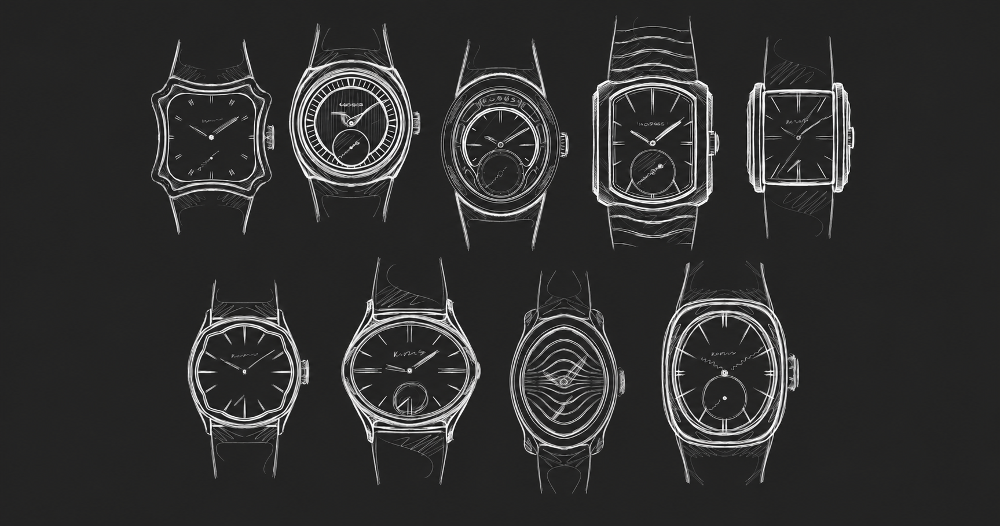
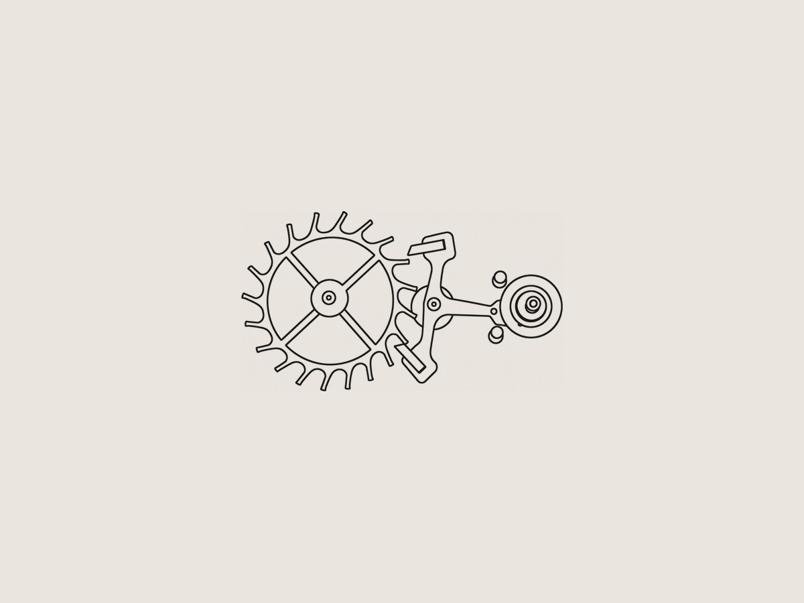
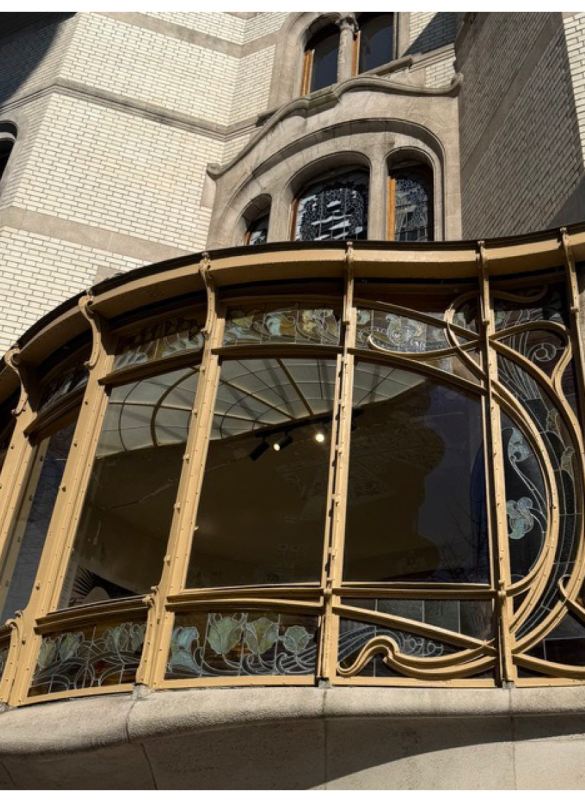
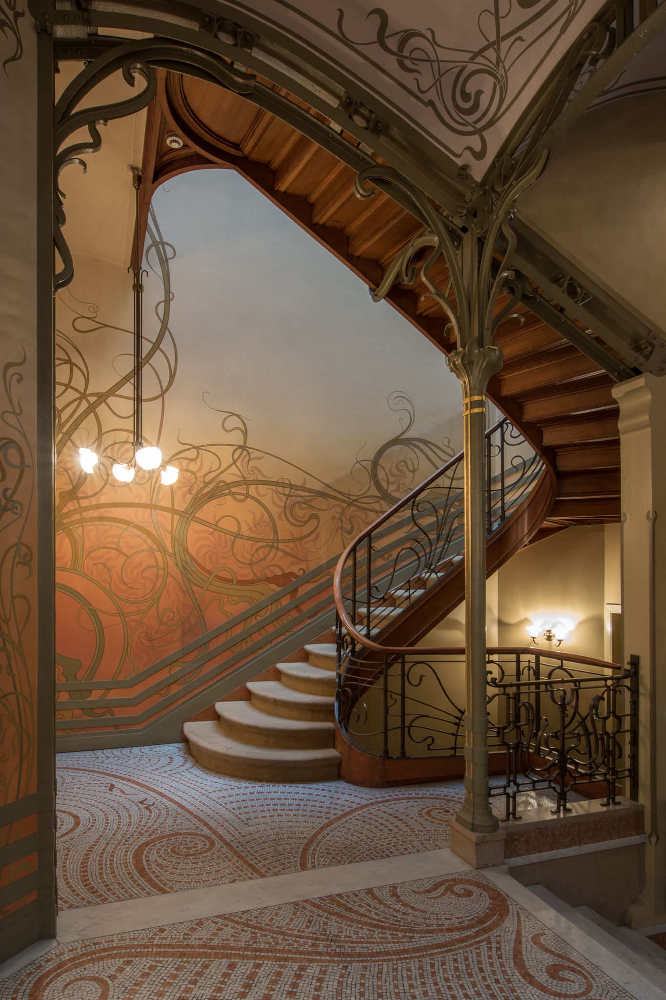

Journal
Notes on development.
Updates on design decisions and sourcing, published when there's something to share.

10 Jun 2026 · Design
René Magritte, and the sub-dial as a window
On the Belgian surrealist, and how a small circle on a dial can suggest more than it shows.
Read the article
24 Mar 2026 · Development
Why we chose a manually wound movement
No date, no automatic rotor — a small seconds sub-dial and a movement you wind by hand. Here is why performance took a back seat to how the watch feels to use.
Read the article
18 Jan 2026 · Design
Designing a watch in a language that predates the wristwatch
Art Nouveau had largely run its course in Brussels before the wristwatch became a commercial object. On designing within a style that never had one.
Read the article
14 Nov 2025 · Design
Why Art Nouveau, and not Art Deco
On the decisions Max and I made before a single line was drawn — and why we chose the harder reference.
Read the articleReleased when ready.
Be there when it lands! Sign up to get updates on development and the first release.